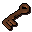
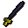

Chaos dwarf
| Config name | dwarf_chaos |
| NPC id | 119 |
| Combat level | 48 |
| Hitpoints | 61 |
| Attack / Strength / Defence | 38 / 42 / 28 |
| Respawn | 300 ticks |
| Options | Attack |
| Aggression | cowardly |
| Wander range | 20 tiles from spawn |
| Max range | 22 tiles from spawn |
| Defined in | scripts/_unpack/225/all.npc |
| Bonuses | Attack bonus 13, Strength bonus 9, Stab def 40, Slash def 34, Crush def 25, Magic def 10, Range def 35 |
Chaos dwarf
A dwarf gone bad.
Show all 17 spawns on the world map → Open in knowledge graph →
Drops
Drop script: scripts/drop tables/scripts/chaos_dwarf.rs2 (specific handler)
Drop table
| Item | Quantity | Rarity | Notes |
|---|---|---|---|
| 92 | 5/16 (31.25%) | ||
| 47 | 9/64 (14.06%) | ||
| 25 | 11/128 (8.59%) | ||
| 150 | 5/64 (7.81%) | ||
 Muddy key | 1 | 7/128 (5.47%) | |
| 1 | 3/64 (4.69%) | ||
| Gem drop table table | see table | 5/128 (3.91%) | |
| 3 | 1/32 (3.12%) | ||
| 24 | 3/128 (2.34%) | ||
| 10 | 3/128 (2.34%) | ||
| 37 | 3/128 (2.34%) | ||
| 9 | 3/128 (2.34%) | ||
| 1 | 1/64 (1.56%) | ||
| 3 | 1/64 (1.56%) | ||
| 350 | 1/64 (1.56%) | ||
| 15 | 1/64 (1.56%) | ||
 Mithril longsword | 1 | 1/128 (0.78%) | |
| 1 | 1/128 (0.78%) | ||
| 3 | 1/128 (0.78%) | ||
| 10 | 1/128 (0.78%) | ||
| 1 | 1/128 (0.78%) | ||
| 1 | 1/128 (0.78%) | ||
| 1 | 1/128 (0.78%) |
Locations
| Area | Coordinates | Level | Count | Map |
|---|---|---|---|---|
| Bone Yard | 3233, 3783 | 0 | 1 | view |
| Bone Yard | 3241, 3796 | 0 | 1 | view |
| Bone Yard | 3253, 3782 | 0 | 1 | view |
| Dark Wizards' Tower (underground) | 2915, 9760 | 0 | 1 | view |
| Dark Wizards' Tower (underground) | 2922, 9757 | 0 | 1 | view |
| Dark Wizards' Tower (underground) | 2925, 9769 | 0 | 1 | view |
| Dark Wizards' Tower (underground) | 2928, 9761 | 0 | 1 | view |
| Pirates' Hideout (underground) | 3029, 10313 | 0 | 1 | view |
| Pirates' Hideout (underground) | 3030, 10308 | 0 | 1 | view |
| Pirates' Hideout (underground) | 3034, 10310 | 0 | 1 | view |
| Pirates' Hideout (underground) | 3036, 10311 | 0 | 1 | view |
| The Forgotten Cemetary | 3019, 3760 | 0 | 1 | view |
| The Forgotten Cemetary | 3019, 3766 | 0 | 1 | view |
| The Forgotten Cemetary | 3021, 3755 | 0 | 1 | view |
| The Forgotten Cemetary | 3025, 3763 | 0 | 1 | view |
| White Knights' Castle (underground) | 2932, 9784 | 0 | 1 | view |
| White Knights' Castle (underground) | 2938, 9788 | 0 | 1 | view |
Quests
Referenced in scripts
scripts/drop tables/scripts/chaos_dwarf.rs2scripts/quests/quest_itwatchtower/scripts/quest_itwatchtower.rs2scripts/quests/quest_legends/scripts/strange_barrel.rs2